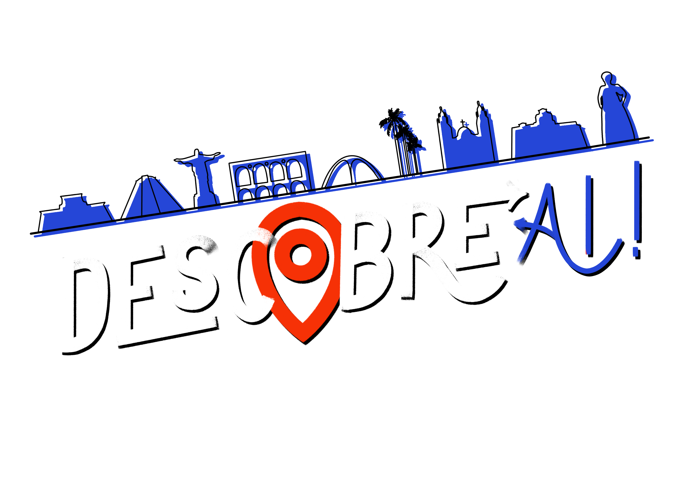

Unilasalle - RJ
Conheça a melhor instituição de ensino superior de Niterói.
Aqui, o futuro chega antes!
Largo do Boticario
Este é um card maior com suporte a texto embaixo, que funciona como uma introdução a um conteúdo adicional. Este conteúdo é um pouco maior, para demonstração.
Rua do Ouvidor
Descubra a rua que já foi considerada a mais importante da cidade do Rio de Janeiro em meados do século XIX.
Escadaria Selaron
Aventure-se pelos milhares de azulejos que compõem a escadaria do Selaron, localizada no bairro da Lapa.
Arco do Teles
Descubra o Arco mais famoso da cidade do Rio de Janeiro.
Igreja N.Sr.ª do Carmo - Antiga Sé
Conheça a primeira catedral da cidade do Rio de Janeiro, localizada no centro da cidade.